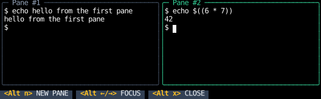

Embedded Terminals
An embedded terminal runs an interactive program, such as a shell, an editor or htop, in a box,
shows its screen as the program draws it, and sends it the keys, pastes and mouse events the box receives,
as a terminal window or a multiplexer's pane does.
It's enough to build a terminal multiplexer: the multiplexer
example runs shells side by side, with direct hotkeys as zellij has.
This page covers the widget, the hook it's built on, a multiplexer built from it, how input reaches the program, and how the terminal is sized. For a program that's expected to exit, whose output is read rather than used, see One-Shot Commands. Pseudo-terminals need Linux or macOS.
A terminal widget
terminal is a bordered box that runs a program in a terminal the size of its content:
SHELL = (os.environ.get("SHELL", "/bin/sh"),)
def quit_on_ctrl_q(event: InputEvent, receiver: Receiver) -> InputResponse:
match event:
case KeyPressed(key=Key.ControlQ):
return Quit()
case _:
return None
@component
def shell(command: tuple[str, ...] = SHELL) -> Div:
return Div(
style=col | full,
children=(
# Ctrl+] bubbles past the shell, so an app that embeds this one, such as the examples' gallery, gets it.
terminal(
command,
style=fill(1),
intercept=quit_on_ctrl_q,
auto_focus=True,
skips={Key.ControlRightBracket},
),
Text(content="Ctrl+Q quits", style=text_color("slate", 500)),
),
)
The screenshot feeds shell output written ahead of time to an emulator rather than running a shell, so it comes out the same on every run.
The box takes no size from the program, since the program draws whatever fits the terminal it's given,
so size the box with style, as fill(1) does here.
The program starts once the box has room, and its terminal resizes with the box.
While the box is focused, the program gets every key, Ctrl+C and Ctrl+Z included,
so an app that embeds a terminal needs some other way out.
intercept is a handler that sees each event before the terminal does,
and keeps it from the program by claiming it, as quit_on_ctrl_q does for Ctrl+Q.
The hook
use_terminal runs the program, emulates its terminal,
and makes the calling component focusable, leaving how it's drawn to the component,
which returns a Canvas with the hook's view and on_input.
This pane puts a prefix handler before the terminal's, as a tmux-style multiplexer would:
@component
def pane(argv: tuple[str, ...], prefix: InputHandler) -> Canvas:
# The terminal is the canvas's content box, so it resizes with the pane.
content = use_rects().content
embedded = use_terminal(argv, content.width, content.height, auto_focus=True)
return Canvas(
painter=embedded.view,
style=fill(1) | border | border_heavy | (border_color("amber", 400) if embedded.focus.is_focused else default),
on_input=first(prefix, embedded.on_input),
)
The hook returns the program's Screen as of the last snapshot,
with its title and the modes it set, and its status: starting, running, exited with its status,
or the reason it failed to start.
The component's view is a ScreenView
that draws the cursor while the component is focused.
A multiplexer
Panes like that one, side by side, with keys that open, close and move focus between them, make a multiplexer. The multiplexer example puts its keys before each pane's terminal, so Alt+N, Alt+X and Alt+Left and Right reach it rather than the shell:

╭─ Pane #1 ────────────────────────────╮╭─ Pane #2 ────────────────────────────╮
│$ echo hello from the first pane ││$ echo $((6 * 7)) │
│hello from the first pane ││42 │
│$ ││$ │
│ ││ │
│ ││ │
│ ││ │
│ ││ │
│ ││ │
│ ││ │
╰──────────────────────────────────────╯╰──────────────────────────────────────╯
<Alt n> NEW PANE <Alt ←/→> FOCUS <Alt x> CLOSE
Each pane's title is the title its program set, from its Screen, after the pane's number,
and a pane closes when its program exits, since its status is then Exited.
Input
Keys, pastes and mouse events reach the program re-encoded, as tmux sends them, rather than passed through,
since the app has already parsed the bytes its terminal sent into events.
Each is encoded as xterm sends it, since the program is told TERM=xterm-256color,
and for the modes the program set:
- Keys go to the program while the component is focused and the program is running,
and are claimed, so they don't bubble.
Cursor keys switch to their application form (
ESC O A) for a program that set DECCKM, as vim does. - Pastes are wrapped in bracketed paste's markers for a program that set
?2004, with any end marker in the text removed, so a paste can't end itself early. - Mouse events on the program's screen go to it only if it asked for them, at the level it asked for: presses, releases and the wheel, motion while a button is held, or all motion. A press focuses the component wherever it lands, and one on the border or padding only focuses it. Once the terminal has claimed a press, the drag and release that follow come to it wherever the pointer goes, and are clamped to the screen's edges. A wheel the program didn't ask for passes on, so a scroll container around the terminal still scrolls.
- Focus events,
ESC [ IandESC [ O, go to a program that set?1004as the component gains and loses focus.
Once the program has exited, keys and pastes pass on, so the app's own keys work again.
Keys before the program
A handler put before the terminal's with first sees each key first,
as a multiplexer's prefix key does:
it claims the keys it binds, and passes on the rest to the program.
The DOM would intercept with a capture-phase listener on an ancestor,
but composing handlers on the terminal's own element does the same.
A prefix and its key often arrive in one read, so keep whether the prefix is waiting in a ref,
as the Prefix Keys cookbook page does.
To let a key past the program to a handler around the terminal instead, name it in skips:
the terminal doesn't send its program a key in skips, and its handler returns None for one, so it bubbles,
as VS Code's terminal skips the keys bound to its own commands.
The multiplexer skips Ctrl+], so it still reaches the examples' gallery around it.
Queries
Programs ask their terminal things, such as where the cursor is or what kind of terminal it is, and wait for the answer. The emulator answers from its own state, as tmux does, and the answer goes to the program as its input.
Output and size
The emulator is fed as the program writes, and snapshotted at most once a frame,
so a program that writes as fast as it can (cat of a large file) costs one snapshot a frame.
When the app falls behind, the pseudo-terminal's buffer fills and the program waits,
which is the backpressure a terminal gives.
A component that sizes the terminal from its own box, with use_rects().content, resizes the program's terminal along with it,
which sends the program SIGWINCH.
use_rects reports the box as of the last frame, so for one frame after a resize the old screen shows,
cropped or padded, until the program redraws, as in tmux.
A program's colors reach the app's terminal as the program chose them (see Colors).
API
terminal(
argv: Sequence[str],
style: Style = default,
styles: TerminalStyles = TerminalStyles(),
intercept: InputHandler | None = None,
env: Mapping[str, str] = frozendict(),
clear_env: bool = False,
cwd: Path | None = None,
hangup_grace: timedelta = HANGUP_GRACE,
auto_focus: bool = False,
handle: FocusHandle | None = None,
is_focusable: bool = True,
in_focus_order: bool = True,
skips: Collection[str] = frozenset(),
) -> Canvas
A bordered box that runs an interactive program, such as a shell or an editor, in a terminal the size of its content,
built on use_terminal,
which takes argv, env, clear_env, cwd, hangup_grace, skips and the focus parameters,
handle being a focus handle.
While it's focused, the program gets every key, the cursor shows, and its border shows it's focused;
a press on it focuses it.
The box takes no size from the program, so size it with style, as with fill(1) or size(82, 26):
the program starts once the box has room, and its terminal resizes with the box.
| PARAMETER | DESCRIPTION |
|---|---|
style
|
Merged over the box's style from
TYPE:
|
styles
|
How the box is drawn.
TYPE:
|
intercept
|
A handler that sees each event before the terminal does, and keeps an event from the program
by claiming it, as a multiplexer's prefix key does.
The terminal claims every key while it's focused, Ctrl+C included,
so an app needs some key here, or in
TYPE:
|
dataclass
TerminalStyles(
*,
box: Style = border
| border_lightrounded
| border_color("slate", 600),
focused_box: Style = border_color("indigo", 400),
)
How terminal draws its box.
The box is styled by box, then the style passed to the widget, then focused_box while it's focused,
as ScrollAreaStyles styles a scroll area's box.
class-attribute
instance-attribute
box: Style = (
border
| border_lightrounded
| border_color("slate", 600)
)
The box around the terminal.
class-attribute
instance-attribute
focused_box: Style = border_color('indigo', 400)
Merged over box and the widget's style while the widget is focused.
use_terminal(
argv: Sequence[str],
columns: int,
rows: int,
env: Mapping[str, str] = frozendict(),
clear_env: bool = False,
cwd: Path | None = None,
hangup_grace: timedelta = HANGUP_GRACE,
foreground: Color = foreground,
background: Color = background,
auto_focus: bool = False,
handle: FocusHandle | None = None,
is_focusable: bool = True,
in_focus_order: bool = True,
skips: Collection[str] = frozenset(),
) -> EmbeddedTerminal
Runs an interactive program, such as a shell or an editor, while the calling component is mounted,
on a pseudo-terminal columns by rows (see use_pty),
emulating the terminal it draws on, and sends it the input the component receives, as a terminal window
or a multiplexer's pane does.
It makes the component focusable, and leaves drawing the terminal to it:
the component returns a Canvas with the hook's view and on_input.
The emulator is fed as the program writes, and snapshotted at most once a frame, which renders the component again.
The emulator answers the program's queries, such as for the cursor's position, from its own state.
A component that sizes the terminal from its own box, with use_rects().content, resizes the program's terminal
along with it, which sends the program SIGWINCH; until the program redraws, the old screen shows,
cropped or padded.
While the component is focused and the program set ?1004, it's sent focus events as the component gains and
loses focus.
| PARAMETER | DESCRIPTION |
|---|---|
argv
|
The program and its arguments. A change hangs the program up and starts the new one,
as a change to |
env
|
Passed to
TYPE:
|
foreground
|
What the program's default colors stand for wherever a cell has to name them,
as for
TYPE:
|
auto_focus
|
Passed to
TYPE:
|
skips
|
Keys the program isn't sent, which
TYPE:
|
dataclass
EmbeddedTerminal(
screen: Screen,
view: ScreenView,
status: PtyStatus,
focus: Focus,
on_input: InputHandler,
write: Callable[[bytes], None],
)
What use_terminal returns to the calling component.
instance-attribute
screen: Screen
What the program's terminal shows, as of the last snapshot, with its title and modes.
instance-attribute
view: ScreenView
The painter for the Canvas the calling component shows the terminal in,
which draws the cursor while the component is focused.
instance-attribute
status: PtyStatus
Whether the program is starting, running, or exited, or why it couldn't start.
instance-attribute
focus: Focus
Whether the calling component is focused, and its focus handle,
as use_focus returns them.
instance-attribute
on_input: InputHandler
The handler for the canvas, which is the element the calling component returns.
While the component is focused and the program is running, it sends the program every key press and paste,
encoded as a terminal sends them for the modes the program set, and claims them, so they don't bubble:
Ctrl+C and Ctrl+Z go to the program rather than to the app.
It sends the program the mouse events on its screen that it asked for, translated to the screen's cells,
and claims them; once it has claimed a press, the drag and release that follow are clamped to the screen's edges.
A press anywhere on the canvas focuses the component, and one off the program's screen, such as on its border,
only focuses it. It returns None for anything else, such as the wheel over a program that didn't ask for it.
Put a handler before it with first to take keys before the program sees them,
as a multiplexer's prefix key does, or name keys in skips to let them bubble past it:
the app needs some key the terminal doesn't claim to leave it.
The bytes a terminal sends a program in modes for a KeyPressed of key:
the key's sequence for a named key, the text's UTF-8 for text, and ESC before it for text typed with Alt.
The bytes a terminal sends a program in modes for a paste of text: its line breaks as carriage returns,
as terminals send them, wrapped in bracketed paste's markers if the program set ?2004.
The end marker is removed from the text until none is left, so a paste can't end itself early
and have the rest typed as keys.
encode_mouse(
event: MouseEvent, position: Position, modes: Modes
) -> bytes | None
The bytes a terminal sends a program in modes for event at position on its screen (from its top left, 0-based),
or None if the program didn't ask for this event:
?9 reports presses only, ?1000 releases and the wheel too, ?1002 motion while a button is held,
and ?1003 all motion.
They're SGR reports (CSI < code ; x ; y M or m) if the program set ?1006,
and otherwise the legacy encoding, which can't report a position past column or row 223.
The bytes a terminal sends a program in modes when it gains focus (CSI I) or loses it (CSI O),
or None if the program didn't ask for them with ?1004.
module-attribute
The bytes a terminal sends for each key, by its KeyPressed.key,
with the cursor keys in their normal mode.